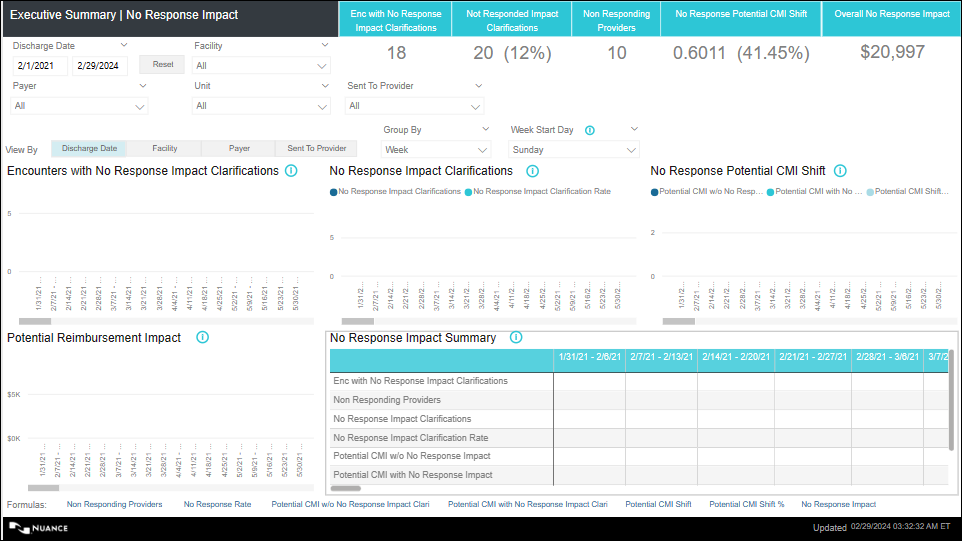
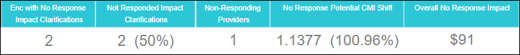
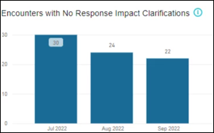
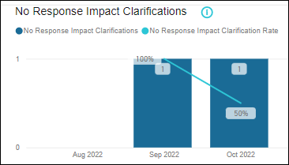
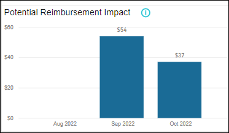
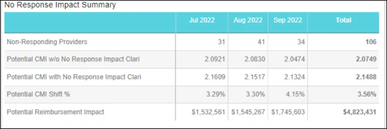

No Response Impact
Overview: The No Response Impact dashboard enables CDI Managers/Directors to analyze the encounters with financial impact clarifications that were not responded and view the missed dollar amount associated with it and work with providers to improve the communication with CDSs and overall CDI program adoption. The dashboard also helps you group data by week, month, quarter, and year and analyze trends over different time periods and analyze them more easily.
- What is the overall potential missed reimbursement?
- How many encounters had at least one no response impact clarification?
- What is the potential missed reimbursement for a specific provider?
- What is the potential missed reimbursement for Medicare cases?
- What are the clarification details of the impact clarifications that were not responded?
- Which providers are not responding to the clarifications sent by the CDS team?
- Which diagnosis codes are most frequently resulting in 'No Response' impact clarifications?
- Which providers should I target to help improve the CDS and Provider communication process and CDI program adoption?
Navigation: On the Analytics home page left side panel, navigate to .
- Encounters with No Response Impact Clarifications
- No Response Impact Clarifications
- No Response Potential CMI Shift
- Potential Reimbursement Impact
- No Response Impact Summary
For View By option, refer, View By
On the top panel, you can select desired values for the slicers, refer Report Slicers and the corresponding data gets filtered in the charts.
For filters on all pages, refer Filters on all Pages.
For Footnotes, refer Footnotes.
Default Display: Report displays the data for 3 calendar months based on the Discharge Date. (Format: Between Date range.)
No Response Impact

No Response Impact - KPI Cards

| KPI Card | Definition |
|---|---|
| Enc with No Response Impact Clarifications |
Displays the count of encounters with at least one Financial Impact clarification with Final Response as No Response for the selected time period. Note:
Clarification with a standard or custom ‘Primary Type at Reconciliation’ defined as ‘Financial’ in the admin configuration is a Financial Impact Clarification. Clarifications with Status 'REMOVED' or 'RETRACTED' are excluded from the count. Clarifications for "Review Not Needed" encounter status should not be considered for this metric calculation. Clarifications that do not have a FINAL response are not considered in this calculation. |
| Not Responded Impact Clarifications |
Displays the count and percentage of Financial Impact Clarifications that were not responded by the providers and with Final Response as No Response for the selected time period. Format: Not Responded Impact Clarifications (No Response Rate). E.g. 12 (56%). Note:
Not Responded Impact Clarifications = Count of Financial Impact Clarifications with Final Response as “No Response” for the selected time period. No Response Rate = Out of total Financial Impact clarifications sent, the percentage of Financial Impact Clarifications with Final Response as “No Response” . No Response Rate = (Financial Impact Clarifications with Final Response as No Response / Count of Financial Impact Clarifications Sent) *100. |
| Non Responding Providers |
Displays the count of sent to providers with at least one financial impact clarification instance responded as No Responses, i.e. Provider Response Field = No Response. Note:
Clarification with a standard or custom ‘Primary Type at Reconciliation’ defined as ‘Financial’ in the admin configuration is a Financial Impact Clarification. Clarifications with Status 'REMOVED' or 'RETRACTED' are excluded from the count. Clarifications for "Review Not Needed" encounter status should not be considered for this metric calculation. Clarifications that do not have a FINAL response are not considered in this calculation. |
| No Response Potential CMI Shift |
Displays the Potential CMI shift and percentage for the financial impact clarifications that were not responded by the providers for the selected time period. Format: No Response Potential CMI Shift (Potential CMI Shift % ). E.g. 1.4532 (1.67%). |
| Overall No Response Impact | Displays the overall potential dollar amount associated with the
financial impact clarifications that the providers did not respond
for the selected time period. Overall No Response Impact = $(No
response Potential CMI Shift * Blended Rate). Format: $4512. |
Encounters with No Response Impact Clarifications

This chart displays the count of encounters with no response financial impact clarifications
- X axis displays the Discharge Month/Facility/Payer/Sent by Provider based on the View by option selected.
- Y axis displays the count of encounters.
-
Info Icon(Text on hover): Displays encounters with Financial Impact Clarifications w Final Response = No Response. Encounter Status: Reconciled - Impact, Reconciled - No Impact; Clarification Status: Includes all clarification statuses except ‘Removed’ or 'Retracted'.
| Columns | Description | Tooltip |
|---|---|---|
| Enc with No Response Impact Clarifications | Count of encounters with at least one clarification instance with
Final Response as No Response for the selected time period. Note: Clarification with a standard or custom ‘Primary Type at Reconciliation’ defined as ‘Financial’ in the admin configuration is a Financial Impact Clarification. Clarifications with Status 'REMOVED' or 'RETRACTED' are excluded from the count. Clarifications for "Review Not Needed" encounter status should not be considered for this metric calculation. Clarifications that do not have a FINAL response are not considered in this calculation. |
Non Responding Providers: Count of sent to providers who have not
responded to the Financial Impact Clarification, i.e. Count of
providers with at least one Financial Impact Clarification instance
with Final response as No Response. Note:
Clarification with a standard or custom ‘Primary Type at Reconciliation’ defined as ‘Financial’ in the admin configuration is a Financial Impact Clarification. Clarifications with Status 'REMOVED' or 'RETRACTED' are excluded from the count. Clarifications for "Review Not Needed" encounter status should not be considered for this metric calculation. Clarifications that do not have a FINAL response are not considered in this calculation. |
No Response Impact Clarifications

This chart displays the count of No Response impact clarifications and the rate for the same for the selected time period.
- X axis displays the Discharge Month/Facility/Payer/Sent by Provider based on the View by option selected.
- Y axis displays the count of Financial Impact clarifications.
- Secondary Y axis displays the No Response Rate.
- Default: Chart displays the values for 3 calendar months
-
Info Icon(Text on hover): Displays Financial Impact Clarifications w Final Response = No Response. Encounter Status: Reconciled - Impact, Reconciled - No Impact; Clarification Status: Includes all clarification statuses except ‘Removed’ or 'Retracted'.
| KPI Card | Description |
|---|---|
| No Response Impact Clarifications |
Count of Financial Impact Clarifications with Final Response as No Response. Note:
Clarification with a standard or custom ‘Primary Type at Reconciliation’ defined as ‘Financial’ in the admin configuration is a Financial Impact Clarification. Clarifications with Status 'REMOVED' or 'RETRACTED' are excluded from the count. Clarifications for "Review Not Needed" encounter status should not be considered for this metric calculation. Clarifications that do not have a FINAL response are not considered in this calculation. |
| No Response Impact Clarification Rate |
Out of total financial impact clarifications sent, the percentage of Financial Impact Clarifications with Final Response as “No Response”. No Response Impact Clarification Rate = (Financial Impact Clarifications with Final Response as No Response / Count of Financial Impact Clarifications Sent) *100. Rounded to 2 decimal places. Format: 3.14%. Note:
Clarifications for "Review Not Needed" encounter status are not considered for this metric calculation. Instances for Clarifications with Status 'REMOVED' or 'RETRACTED' are not considered for this metric calculation. Clarifications that do not have a FINAL response are not considered in this calculation. |
No Response Potential CMI Shift

This chart displays the Potential CMI with and without No Response Impact Clarifications and Potential CMI Shift % for the selected time period.
- X axis displays the Discharge Month/Facility/Payer/Sent by Provider based on the View by option selected.
- Y axis displays the Potential CMI values.
- Secondary Y axis displays the Potential CMI Shift % as a Line Chart.
- Default: Chart displays the values for 3 calendar months.
-
Info Icon(Text on hover): Potential CMI metrics are for all w & w/o No Response financial impact clarifications; Encounter Status: Reconciled - Impact, Reconciled - No Impact.
| Column Name | Description | Formula/Calculation | Tooltip |
|---|---|---|---|
| Potential CMI w/o No Response Impact Clari |
Displays the potential CMI w/o No Response Impact Clari for the selected View by option. Note:
This value is represented with 4
decimals. Format : 1.9985. |
Potential CMI w/o No Response Impact Clari = The sum of Final Coded DRG WTs of all Reconciled- No Impact (Impact Type: No Impact), and Reconciled Impact (Impact Type: SOI/ROM Impact, Financial, Both) encounters with at least one Financial Impact Clarification (Standard or custom) with Final response as No Response / Total count of Reconciled- No Impact (Impact Type: No Impact), and Reconciled Impact (Impact Type: SOI/ROM Impact, Both, Financial) encounters with at least one Financial Impact Clarification (Standard or custom) with Final response as No Response. | Potential CMI Shift - This metric displays the Potential CMI Shift for the selected View by option. |
| Potential CMI with No Response Impact Clari |
Displays the potential CMI w/o No Response Impact Clari for the selected View by option. Note:
This value is represented with 4
decimals. Format : 1.9985. |
Potential CMI w/o No Response Impact Clari = The sum of Final Coded DRG WTs of all Reconciled- No Impact (Impact Type: No Impact), and Reconciled Impact (Impact Type: SOI/ROM Impact, Financial, Both) encounters with at least one Financial Impact Clarification (Standard or custom) with Final response as No Response / Total count of Reconciled- No Impact (Impact Type: No Impact), and Reconciled Impact (Impact Type: SOI/ROM Impact, Both, Financial) encounters with at least one Financial Impact Clarification (Standard or custom) with Final response as No Response. | Potential CMI Shift - This metric displays the Potential CMI Shift for the selected View by option . |
| Potential CMI Shift | Displays the Potential CMI Shift value for the selected View by option. | Potential CMI Shift = Potential CMI with No Response Impact Clari - Potential CMI w/o No Response Impact Clari | |
| Potential CMI Shift % |
Displays the Potential CMI Shift % value for the selected View by option. Potential CMI Shift % = [(Potential CMI with No Response Impact Clari - Potential CMI w/o No Response Impact Clari ) /Potential CMI w/o No Response Impact Clari] *100 Note:
Rounded to 2 decimal places. Format: 3.14%. |
Potential CMI Shift % = (Potential CMI with No Response Impact Clari - Potential CMI w/o No Response Impact Clari) / Potential CMI w/o No Response Impact Clari x 100 |
Potential Reimbursement Impact
This chart displays the potential Reimbursement Impact for each of the selected View By option.
- X axis displays the Discharge Month//Facility/Payer/Sent by Provider based on the View by option selected.
- Y axis displays the $ values.
- Default: Chart displays the values for 3 calendar months.
-
Info Icon(Text on hover): Potential Reimbursement Impact $ resulting from the potential CMI shift for all w & w/o No Response financial impact clarifications; Encounter Status: Reconciled - Impact, Reconciled - No Impact.
| Column Name | Description |
|---|---|
| Potential Reimbursement Impact |
This metric displays the potential dollar amount due to the physicians not responding to the financial impact clarifications for each of the selected View By option. Potential Reimbursement Impact = Potential CMI Shift * Blended Rate. Note:
This value is represented with $.
Format: $45239. |
No Response Impact Summary

This chart displays the summarized detail and monthly trend for the selected time period based on the View by option selected.
- Column Headers: Displays the View by options selected (Discharge Month,
Facility, Payer/ Sent to Provider).Note:When the View By option is selected as "Provider to Sent", the No Response Impact Summary chart is updated to show the provider names as rows headers instead of column headers, and metrics are displayed as columns headers.
- Row Headers: Displays the metrics.
- Default: Displays the values for 3 calendar months.
- Totals are available at the end against each of the metric displaying the cumulative values for the selected time period/date range.
- Default: Chart displays the values for 3 calendar months.
-
Info Icon(Text on hover): Encounter Status: Reconciled - Impact, Reconciled - No Impact; Clarification Status: Includes all clarification statuses except ‘Removed’ or 'Retracted'.
| Column Name | Description | Formula/Calculation |
|---|---|---|
| Enc with No Response Impact Clarifications |
Count of encounters with at least one clarification instance with Final Response as No Response. Note:
Clarification with a standard or custom ‘Primary Type at Reconciliation’ defined as ‘Financial’ in the admin configuration is a Financial Impact Clarification. Clarifications with Status 'REMOVED' or 'RETRACTED' are excluded from the count. Clarifications for "Review Not Needed" encounter status should not be considered for this metric calculation. Clarifications that do not have a FINAL response are not considered in this calculation. |
|
| Non Responding Providers |
Count of sent to providers who have not responded to the Financial Impact Clarification, i.e. Count of providers with at least one Financial Impact Clarification instance with Final response as No Response. Note:
Clarification with a standard or custom ‘Primary Type at Reconciliation’ defined as ‘Financial’ in the admin configuration is a Financial Impact Clarification. Clarifications with Status 'REMOVED' or 'RETRACTED' are excluded from the count. Clarifications for "Review Not Needed" encounter status should not be considered for this metric calculation. Clarifications that do not have a FINAL response are not considered in this calculation. |
|
| No Response Impact Clarifications |
Count of Financial Impact Clarifications with Final Response as No Response. Note:
Clarification with a standard or custom ‘Primary Type at Reconciliation’ defined as ‘Financial’ in the admin configuration is a Financial Impact Clarification. Clarifications with Status 'REMOVED' or 'RETRACTED' are excluded from the count. Clarifications for "Review Not Needed" encounter status should not be considered for this metric calculation. Clarifications that do not have a FINAL response are not considered in this calculation. |
|
| No Response Impact Clarification Rate |
Out of total financial impact clarifications sent, the percentage of Financial Impact Clarifications with Final Response as “No Response” . No Response Impact Clarification Rate = (Financial Impact Clarifications with Final Response as No Response / Count of Financial Impact Clarifications Sent) *100. Format: 1.67%. Note:
Clarifications for "Review Not Needed" encounter status are not considered for this metric calculation. Instances for Clarifications with Status 'REMOVED' or 'RETRACTED' are not considered for this metric calculation. Clarifications that do not have a FINAL response are not considered in this calculation. |
|
| Potential CMI w/o No Response Impact Clari |
Displays the potential CMI w/o No Response Impact Clari for the selected View by option. Note:
This value is represented with 4
decimals. Format: 1.9985. |
Potential CMI w/o No Response Impact Clari = The sum of Final Coded DRG WTs of all Reconciled- No Impact (Impact Type: No Impact), and Reconciled Impact (Impact Type: SOI/ROM Impact, Financial, Both) encounters with at least one Financial Impact Clarification (Standard or custom) with Final response as No Response / Total count of Reconciled- No Impact (Impact Type: No Impact), and Reconciled Impact (Impact Type: SOI/ROM Impact, Both, Financial) encounters with at least one Financial Impact Clarification (Standard or custom) with Final response as No Response. |
| Potential CMI with No Response Impact Clari |
Displays the potential CMI with No Response Impact Clarification. Note:
This value is represented with 4
decimals. Format: 2.0156. |
Potential CMI with No Response Impact Clari = The sum of Reconciliation Assessment Coded DRG WTs of all Reconciled- No Impact (Impact Type: No Impact), and Reconciled Impact (Impact Type: SOI/ROM Impact) encounters with at least one No Response Financial Impact Clarification (Standard or custom) and no other Agreed/Alt DX/Other Explanation Financial Impact Clarification (Standard or custom) and the sum of Reconciliation Assessment DRG WTs (from backend grouping) of all the Reconciled Impact (Impact Type: Both, Financial) encounters with at least one No Response Financial Impact Clarification (Standard or custom) and with at least one Agreed/Alt DX/Other Explanation Financial Impact Clarification (Standard or custom) / Total count of Reconciled- No Impact (Impact Type: No Impact), and Reconciled Impact (Impact Type: SOI/ROM Impact, Both , Financial) encounters with at least one Financial Impact Clarification (Standard or custom) with Final response as No Response. |
| Potential CMI Shift % |
Displays the Potential CMI Shift % value. Potential CMI Shift % = [(Potential CMI with No Response Impact Clari - Potential CMI w/o No Response Impact Clari) *Blended Rate] Note:
Rounded to 2 decimal places.
Format: 3.14%. |
Potential CMI Shift % = (Potential CMI with No Response Impact Clari - Potential CMI w/o No Response Impact Clari) / Potential CMI w/o No Response Impact Clari x 100. |
| Potential Reimbursement Impact |
This metric displays the potential dollar amount due to the physicians not responding to the financial impact clarifications for each of the selected View By option. Potential Reimbursement Impact = Potential CMI Shift * Blended Rate. Note:
This value is represented with $.
Format: $45239. |
| View By | Description |
|---|---|
| Discharge Date |
This option is selected by default. When you click this option, Group By and Week Start Day filters automatically become available for selection. When the ‘Discharge Month’ option is selected, all the charts in the dashboard display the data by discharge month. Discharge month is displayed on the X-axis. |
| Facility |
When the ‘Facility’ option is selected, all the charts in the dashboard display the data by Facility. Facility Description is displayed on the X-axis. When the ‘View By’ is Facility, the data in all the charts is sorted by Facility name in ascending order. |
| Payer |
When the ‘Payer’ option is selected, all the charts in the dashboard display the data by Payer. Payer Description is displayed on the X-axis. When the ‘View By’ is Payer, the data in all the charts is sorted by Payer description in ascending order |
| Sent to Provider |
When the "Sent To Provider" option is selected, all the charts in the dashboard are sorted by provider name in ascending order. All the KPI cards totals, shows value at encounter level for “Sent To Provider”. Note:
|
| Slicer | Description |
|---|---|
| Discharge Date |
|
| Reset Button | Allows the user to reset the discharge date. |
| Facility |
|
| Payer |
|
| Unit |
|
| Sent to Provider |
|
| "Group By" and "Week Start Day" options | These options are available only when the View By option is selected as Admit Date/Discharge Date. |
| Filter | Description |
|---|---|
| Patient Type |
|
| Admit Service |
|
| Visit Type |
|
| DRG Specialty |
|
| Formula | Text on hover |
|---|---|
| Non Responding Providers | Count of sent to providers who have not responded to the Financial Impact Clarification, i.e. count of providers with at least one Financial Impact Clarification instance with Final response as No Response. |
| No Response Rate | Out of total Financial Impact clarifications sent, the percentage of Financial Impact Clarifications with Final Response as “No Response”. No Response Rate = (Financial Impact Clarifications with Final Response as No Response / Count of Financial Impact Clarifications Sent) *100. |
| Potential CMI w/o No Response Impact Clari | The avg. of F-DRG WTs of all Reconciled - No Impact (Impact Type: No Impact) and Reconciled Impact (Impact Type: SOI/ROM, Financial, Both) encounters with at least one Financial Impact Clarification (standard or custom) with Final response=No Response. |
| Potential CMI with No Response Impact Clari | The avg. of R-DRG WTs of all Reconciled - No Impact and Reconciled Impact (SOI/ROM) Encounters with only one Financial Impact Clarification as No Response and R-DRG WTs (backend grouping) of all the Reconciled Impact (Both, Financial) Encounters with more than one Financial Impact Clarifications with Final Response as Agreed/Alt Dx/Other Explanation and at-least one No Response Clarification. |
| Potential CMI Shift | Potential CMI Shift = (Potential CMI with No Response Impact Clari - Potential CMI w/o No Response Impact Clari). |
| Potential CMI Shift % | Potential CMI Shift % = (Potential CMI with No Response Impact Clari - Potential CMI w/o No Response Impact Clari) / Potential CMI w/o No Response Impact Clari x 100. |
| No Response Impact | The sum of No Response Impact ((Potential CMI with No Response Impact Clari-Potential CMI w/o No Response Impact Clari) * Blended Rate) for all Reconciled-No Impact(Impact Type: No Impact) & Reconciled Impact (Impact Type: SOI/ROM, Financial, Both). |